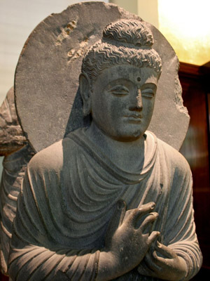

The Seated Buddha, from Gandhara, 2nd - 3rd Century AD, made from schist
Like other
Gandharan or Greco-Buddhist art, the sculpture shows the influence of Ancient Greek sculptural art.
Gandhara had been part of the Greco-Bactrian Kingdom established by Alexander the Great. Gandhāra was
an ancient Indic kingdom situated in the northwestern region of Pakistan, around Peshawar.
Statues of the Buddha were not made until after the 1st century CE. For the first four
hundred years after his death Buddha was represented by symbols alone such as his footprint or an
empty throne or Bodhi tree. The statue was made in the 2nd or 3rd century, and although Buddha lived
in the 4th century before Christ, this is an early and rare example of Buddha in human form. (2)